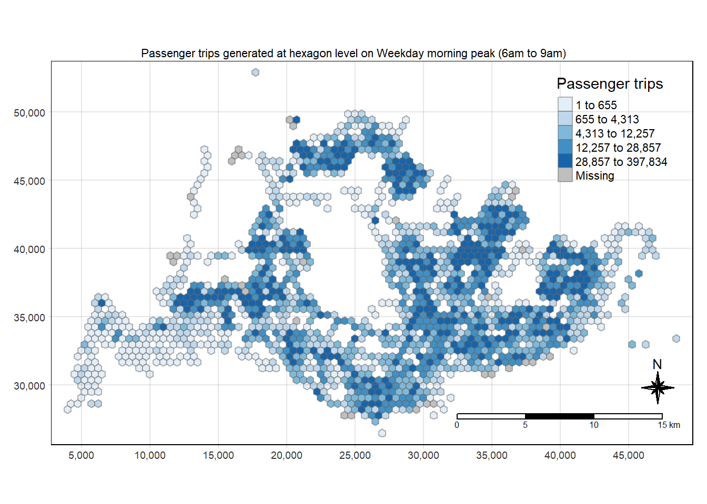
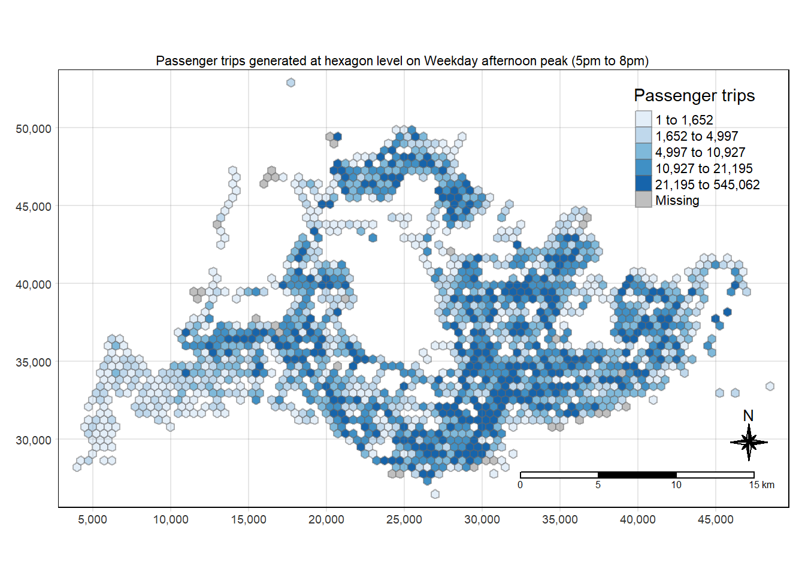
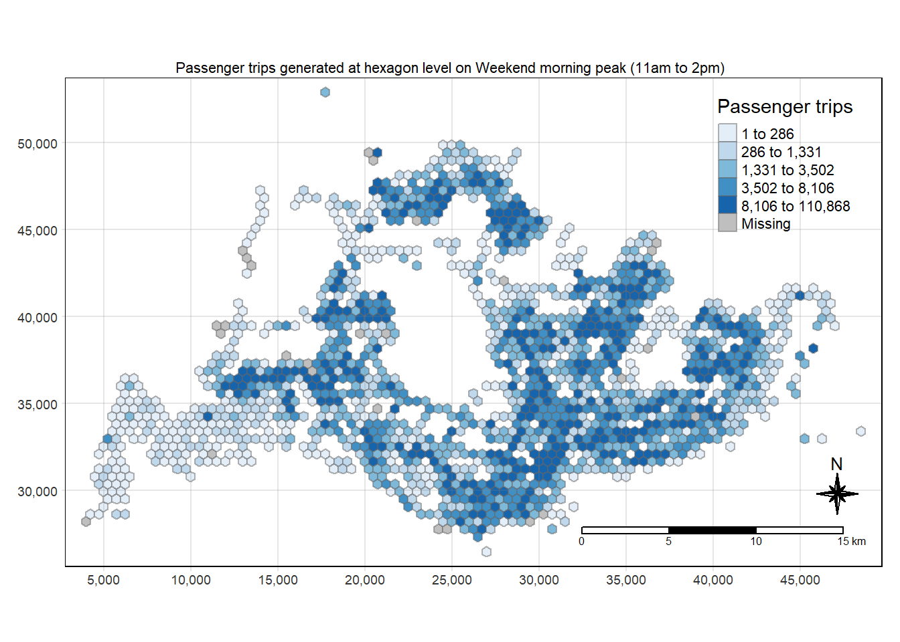

pacman::p_load(sf, tidyverse, tmap, knitr)Take-Home Exercise 1: Geospatial Analytics for Public Good
Overview
Exploratory Spatial Data Analysis (ESDA) hold tremendous potential to address complex problems facing society. In this take-home exercise, we apply appropriate Local Indicators of Spatial Association (GLISA) and Emerging Hot Spot Analysis (EHSA) to undercover the spatial and spatio-temporal mobility patterns of public bus passengers in Singapore.
Getting Started
In this take-home exercise, the following R packages will be used:
- sf for geospatial data handling
- tidyverse for non-spatial data handling
- tmap for thematic mapping
- knitr for creating html table.
The Data
Importing geospatial data
Firstly, we import Bus Stops Location from LTA DataMall. This provides information about all the bus stops currently being serviced by buses, including the bus stop code (identifier) and location coordinates:
busstop <- st_read(dsn = "data/geospatial",
layer = "BusStop") %>%
st_transform(crs = 3414)Reading layer `BusStop' from data source
`C:\PeiShan0502\ISSS624\Take-home_Ex1\data\geospatial' using driver `ESRI Shapefile'
Simple feature collection with 5161 features and 3 fields
Geometry type: POINT
Dimension: XY
Bounding box: xmin: 3970.122 ymin: 26482.1 xmax: 48284.56 ymax: 52983.82
Projected CRS: SVY21From the output, we can see that busstop is in SVY21 coordinates system. To learn more, we can apply glimpse() of dplyr package:
glimpse(busstop)Rows: 5,161
Columns: 4
$ BUS_STOP_N <chr> "22069", "32071", "44331", "96081", "11561", "66191", "2338…
$ BUS_ROOF_N <chr> "B06", "B23", "B01", "B05", "B05", "B03", "B02A", "B02", "B…
$ LOC_DESC <chr> "OPP CEVA LOGISTICS", "AFT TRACK 13", "BLK 239", "GRACE IND…
$ geometry <POINT [m]> POINT (13576.31 32883.65), POINT (13228.59 44206.38),…From the above two outputs, we can see that there are 5161 points with 3 fields (BUS_STOP_N, BUS_ROOF_N, LOC_DESC).
Importing aspatial data
Next, we will import origin_destination_bus_202310.csv into R by using read_csv() of readr package. The output is R data frame class. This data set returns the number of trips by weekdays and weekends from the origin to destination bus stops in October 2023:
odbus <- read_csv("data/aspatial/origin_destination_bus_202310.csv", show_col_types = FALSE)Similarly, we can use glimpse() to see all the columns and their data type in the R data frame:
glimpse(odbus)Rows: 5,694,297
Columns: 7
$ YEAR_MONTH <chr> "2023-10", "2023-10", "2023-10", "2023-10", "2023-…
$ DAY_TYPE <chr> "WEEKENDS/HOLIDAY", "WEEKDAY", "WEEKENDS/HOLIDAY",…
$ TIME_PER_HOUR <dbl> 16, 16, 14, 14, 17, 17, 17, 7, 14, 14, 10, 20, 20,…
$ PT_TYPE <chr> "BUS", "BUS", "BUS", "BUS", "BUS", "BUS", "BUS", "…
$ ORIGIN_PT_CODE <chr> "04168", "04168", "80119", "80119", "44069", "2028…
$ DESTINATION_PT_CODE <chr> "10051", "10051", "90079", "90079", "17229", "2014…
$ TOTAL_TRIPS <dbl> 3, 5, 3, 5, 4, 1, 24, 2, 1, 7, 3, 2, 5, 1, 1, 1, 1…The fields ORIGIN_PT_CODE and DESTINATION_PT_CODE represent the bus stop number at the origin and destination. They need to be converted into factor data type so that we can geocode/georeference with the Bus Stops Location geospatial data later.
The code chunk below converts them into factor data type:
odbus$ORIGIN_PT_CODE <- as.factor(odbus$ORIGIN_PT_CODE)
odbus$DESTINATION_PT_CODE <- as.factor(odbus$DESTINATION_PT_CODE) Now we check that both fields are in factor data type now:
glimpse(odbus)Rows: 5,694,297
Columns: 7
$ YEAR_MONTH <chr> "2023-10", "2023-10", "2023-10", "2023-10", "2023-…
$ DAY_TYPE <chr> "WEEKENDS/HOLIDAY", "WEEKDAY", "WEEKENDS/HOLIDAY",…
$ TIME_PER_HOUR <dbl> 16, 16, 14, 14, 17, 17, 17, 7, 14, 14, 10, 20, 20,…
$ PT_TYPE <chr> "BUS", "BUS", "BUS", "BUS", "BUS", "BUS", "BUS", "…
$ ORIGIN_PT_CODE <fct> 04168, 04168, 80119, 80119, 44069, 20281, 20281, 1…
$ DESTINATION_PT_CODE <fct> 10051, 10051, 90079, 90079, 17229, 20141, 20141, 1…
$ TOTAL_TRIPS <dbl> 3, 5, 3, 5, 4, 1, 24, 2, 1, 7, 3, 2, 5, 1, 1, 1, 1…Task 1: Geovisualisation and Analysis
With reference to the time intervals provided in the table below, we would like to compute the passenger trips generated by origin at the hexagon level.
| Peak hour period | Bus tap on time (in 24hr format) |
|---|---|
| Weekday morning peak | 0600 to 0900 |
| Weekday afternoon peak | 1700 to 2000 |
| Weekend/holiday morning peak | 1100 to 1400 |
| Weekend/holiday evening peak | 1600 to 1900 |
Data Preparation
Filter by peak hour period
The output of the code chunks below shows the number of passenger trips for each bus stop in each peak hour period:
Weekday morning peak: 6am to 9am
origin6_9 <- odbus %>%
filter(DAY_TYPE == "WEEKDAY") %>%
filter(TIME_PER_HOUR >= 6 &
TIME_PER_HOUR <= 9) %>%
group_by(ORIGIN_PT_CODE) %>%
summarise(TRIPS = sum(TOTAL_TRIPS))Weekday afternoon peak: 5pm to 8pm
origin17_20 <- odbus %>%
filter(DAY_TYPE == "WEEKDAY") %>%
filter(TIME_PER_HOUR >= 17 &
TIME_PER_HOUR <= 20) %>%
group_by(ORIGIN_PT_CODE) %>%
summarise(TRIPS = sum(TOTAL_TRIPS))Weekend/holiday morning peak: 11am to 2pm
origin11_14 <- odbus %>%
filter(DAY_TYPE == "WEEKENDS/HOLIDAY") %>%
filter(TIME_PER_HOUR >= 11 &
TIME_PER_HOUR <= 14) %>%
group_by(ORIGIN_PT_CODE) %>%
summarise(TRIPS = sum(TOTAL_TRIPS))Weekend/holiday evening peak: 4pm to 7pm
origin16_19 <- odbus %>%
filter(DAY_TYPE == "WEEKENDS/HOLIDAY") %>%
filter(TIME_PER_HOUR >= 16 &
TIME_PER_HOUR <= 19) %>%
group_by(ORIGIN_PT_CODE) %>%
summarise(TRIPS = sum(TOTAL_TRIPS))We save the outputs in rds format for future use:
write_rds(origin6_9, "data/rds/origin6_9.rds")
write_rds(origin17_20, "data/rds/origin17_20.rds")
write_rds(origin11_14, "data/rds/origin11_14.rds")
write_rds(origin16_19, "data/rds/origin16_19.rds")Create Hexagon layer
Create hexagon layer over Bus Stops Location:
The code chunk below is used to first create a hexagon layer over the Bus Stops Location (busstops), then find the number of bus stops in each hexagon. We also remove hexagons where there are no bus stops.
An explanation of key functions used:
st_make_grid: for hexagon, the argument cellsize refers to the distance between opposite edges. Since the task requires us to create a hexagon layer such that the perpendicular distance between the centre of the hexagon and its edges is 250m, this implies that the distance between opposite edges is 500m.st_sf: convert sfc_POLYGON object (returned byst_make_grid) to simple feature sf object.st_intersects: returns a list of which points are lying in each hexagon.
area_honeycomb_grid = st_make_grid(busstop, c(500, 500), what = "polygons", square = FALSE)
# Convert to sf object
honeycomb_grid_sf = st_sf(area_honeycomb_grid) %>%
# add grid ID (giving each hexagon a unique ID)
mutate(grid_id = 1:length(lengths(area_honeycomb_grid)))
# count number of points (bus stops) in each grid/hexagon
honeycomb_grid_sf$n_colli = lengths(st_intersects(honeycomb_grid_sf, busstop))
# remove grid/hexagons with value of 0 (i.e. no points inside that grid)
honeycomb_count = filter(honeycomb_grid_sf, n_colli > 0)
#Note: The n_colli column shows the number of bus stops in each grid/hexagon.st_geometry(honeycomb_count)Geometry set for 1524 features
Geometry type: POLYGON
Dimension: XY
Bounding box: xmin: 3720.122 ymin: 26193.43 xmax: 48720.12 ymax: 53184.55
Projected CRS: SVY21 / Singapore TM
First 5 geometries:POLYGON ((3970.122 27925.48, 3720.122 28069.81,...POLYGON ((4220.122 28358.49, 3970.122 28502.83,...POLYGON ((4470.122 30523.55, 4220.122 30667.89,...POLYGON ((4720.122 28358.49, 4470.122 28502.83,...POLYGON ((4720.122 30090.54, 4470.122 30234.88,...We also confirm that the EPSG code for honeycomb_count is correct (3414 for projected coordinate system SVY21):
st_crs(honeycomb_count)Coordinate Reference System:
User input: EPSG:3414
wkt:
PROJCRS["SVY21 / Singapore TM",
BASEGEOGCRS["SVY21",
DATUM["SVY21",
ELLIPSOID["WGS 84",6378137,298.257223563,
LENGTHUNIT["metre",1]]],
PRIMEM["Greenwich",0,
ANGLEUNIT["degree",0.0174532925199433]],
ID["EPSG",4757]],
CONVERSION["Singapore Transverse Mercator",
METHOD["Transverse Mercator",
ID["EPSG",9807]],
PARAMETER["Latitude of natural origin",1.36666666666667,
ANGLEUNIT["degree",0.0174532925199433],
ID["EPSG",8801]],
PARAMETER["Longitude of natural origin",103.833333333333,
ANGLEUNIT["degree",0.0174532925199433],
ID["EPSG",8802]],
PARAMETER["Scale factor at natural origin",1,
SCALEUNIT["unity",1],
ID["EPSG",8805]],
PARAMETER["False easting",28001.642,
LENGTHUNIT["metre",1],
ID["EPSG",8806]],
PARAMETER["False northing",38744.572,
LENGTHUNIT["metre",1],
ID["EPSG",8807]]],
CS[Cartesian,2],
AXIS["northing (N)",north,
ORDER[1],
LENGTHUNIT["metre",1]],
AXIS["easting (E)",east,
ORDER[2],
LENGTHUNIT["metre",1]],
USAGE[
SCOPE["Cadastre, engineering survey, topographic mapping."],
AREA["Singapore - onshore and offshore."],
BBOX[1.13,103.59,1.47,104.07]],
ID["EPSG",3414]]Geospatial Data Wrangling
Combining Bus Stop Location and Hexagon layer
The output of the code chunk below shows which bus stop is in which hexagon (BUS_STOP_N and grid_id) and the number of bus stops in that hexagon (n_colli).
busstop_hex <- st_intersection(busstop, honeycomb_count) %>%
select(BUS_STOP_N, grid_id, n_colli) %>%
st_drop_geometry()Warning: attribute variables are assumed to be spatially constant throughout
all geometries#BUS_STOP_N: Bus stop number
#n_colli: no. of bus stops in each hexagonWe save the output:
write_rds(busstop_hex, "data/rds/busstop_hex.csv")Join data frames to get number of trips in each hexagon
The output of the code chunk below shows the total number of passenger trips in each hexagon (for Weekday morning peak: 6am to 9am):
hextrips6_9 <- left_join(origin6_9 , busstop_hex,
by = c("ORIGIN_PT_CODE" = "BUS_STOP_N")) %>%
group_by(grid_id) %>%
summarise(TOT_TRIPS = sum(TRIPS))Before continuing, it is good to check for duplicate records. The output of the code chunk below shows that there are no duplicate records:
duplicate6_9 <- hextrips6_9 %>%
group_by_all() %>%
filter(n()>1) %>%
ungroup()If duplicated records are found, the code chunk below can be used to retain the unique records:
unique_hextrips6_9 <- unique(hextrips6_9)The code chunks below follow a similar process for the other peak periods:
Weekday afternoon peak: 5pm to 8pm
hextrips17_20 <- left_join(origin17_20 , busstop_hex,
by = c("ORIGIN_PT_CODE" = "BUS_STOP_N")) %>%
group_by(grid_id) %>%
summarise(TOT_TRIPS = sum(TRIPS))
# Only take unique records:
unique_hextrips17_20 <- unique(hextrips17_20)Weekend/holiday morning peak: 11am to 2pm
hextrips11_14 <- left_join(origin11_14 , busstop_hex,
by = c("ORIGIN_PT_CODE" = "BUS_STOP_N")) %>%
group_by(grid_id) %>%
summarise(TOT_TRIPS = sum(TRIPS))
# Only take unique records:
unique_hextrips11_14 <- unique(hextrips11_14)Weekend/holiday evening peak: 4pm to 7pm
hextrips16_19 <- left_join(origin16_19 , busstop_hex,
by = c("ORIGIN_PT_CODE" = "BUS_STOP_N")) %>%
group_by(grid_id) %>%
summarise(TOT_TRIPS = sum(TRIPS))
# Only take unique records:
unique_hextrips16_19 <- unique(hextrips16_19)Perform relational join with hexagon data to retain geometric information
The output of the code chunks below shows the following information for each peak hour period:
grid_id: the id for each hexagon
n_colli: the number of bus stops in each hexagon
TOT_TRIPS: the number of passenger trips in each hexagon
area_honeycomb_grid: geometric information of each hexagon
Weekday morning peak: 6am to 9am
hexData6_9 <- left_join(honeycomb_count,
unique_hextrips6_9,
by = c("grid_id" = "grid_id"))Weekday afternoon peak: 5pm to 8pm
hexData17_20 <- left_join(honeycomb_count,
unique_hextrips17_20,
by = c("grid_id" = "grid_id"))Weekend/holiday morning peak: 11am to 2pm
hexData11_14 <- left_join(honeycomb_count,
unique_hextrips11_14,
by = c("grid_id" = "grid_id"))Weekend/holiday evening peak: 4pm to 7pm
hexData16_19 <- left_join(honeycomb_count,
unique_hextrips16_19,
by = c("grid_id" = "grid_id"))Geospatial Visualisation
We would now like to display the geographical distribution of the passenger trips for each peak hour period:
Weekday morning peak: 6am to 9am
tm_shape(hexData6_9)+
tm_fill("TOT_TRIPS",
style = "quantile",
palette = "Blues",
title = "Passenger trips") +
tm_layout(main.title = "Passenger trips generated at hexagon level on Weekday morning peak (6am to 9am)",
main.title.position = "center",
main.title.size = 0.7,
legend.height = 0.45,
legend.width = 0.35,
frame = TRUE) +
tm_borders(alpha = 0.5) +
tm_compass(type="8star", size = 2) +
tm_scale_bar() +
tm_grid(alpha =0.2)
Weekday afternoon peak: 5pm to 8pm
tm_shape(hexData17_20)+
tm_fill("TOT_TRIPS",
style = "quantile",
palette = "Blues",
title = "Passenger trips") +
tm_layout(main.title = "Passenger trips generated at hexagon level on Weekday afternoon peak (5pm to 8pm)",
main.title.position = "center",
main.title.size = 0.7,
legend.height = 0.45,
legend.width = 0.35,
frame = TRUE) +
tm_borders(alpha = 0.5) +
tm_compass(type="8star", size = 2) +
tm_scale_bar() +
tm_grid(alpha =0.2)
Weekend/holiday morning peak: 11am to 2pm
tm_shape(hexData11_14)+
tm_fill("TOT_TRIPS",
style = "quantile",
palette = "Blues",
title = "Passenger trips") +
tm_layout(main.title = "Passenger trips generated at hexagon level on Weekend morning peak (11am to 2pm)",
main.title.position = "center",
main.title.size = 0.7,
legend.height = 0.45,
legend.width = 0.35,
frame = TRUE) +
tm_borders(alpha = 0.5) +
tm_compass(type="8star", size = 2) +
tm_scale_bar() +
tm_grid(alpha =0.2)
Weekend/holiday evening peak: 4pm to 7pm
tm_shape(hexData16_19)+
tm_fill("TOT_TRIPS",
style = "quantile",
palette = "Blues",
title = "Passenger trips") +
tm_layout(main.title = "Passenger trips generated at hexagon level on Weekday evening peak (4pm to 7pm)",
main.title.position = "center",
main.title.size = 0.7,
legend.height = 0.45,
legend.width = 0.35,
frame = TRUE) +
tm_borders(alpha = 0.5) +
tm_compass(type="8star", size = 2) +
tm_scale_bar() +
tm_grid(alpha =0.2)